Granola + Fruit + Yogurt Reviews
The universe has decided that my favorite dish of all time is the yogurt granola fruit combination. I am in a continous search for the best one. This page is sorted by rank, with best at the top and worst on the bottom. enjoy!
Yali’s Qualcomm Cafe, Berkeley CA, "Granola Fruit and Yogurt"
Ranking: S Tier
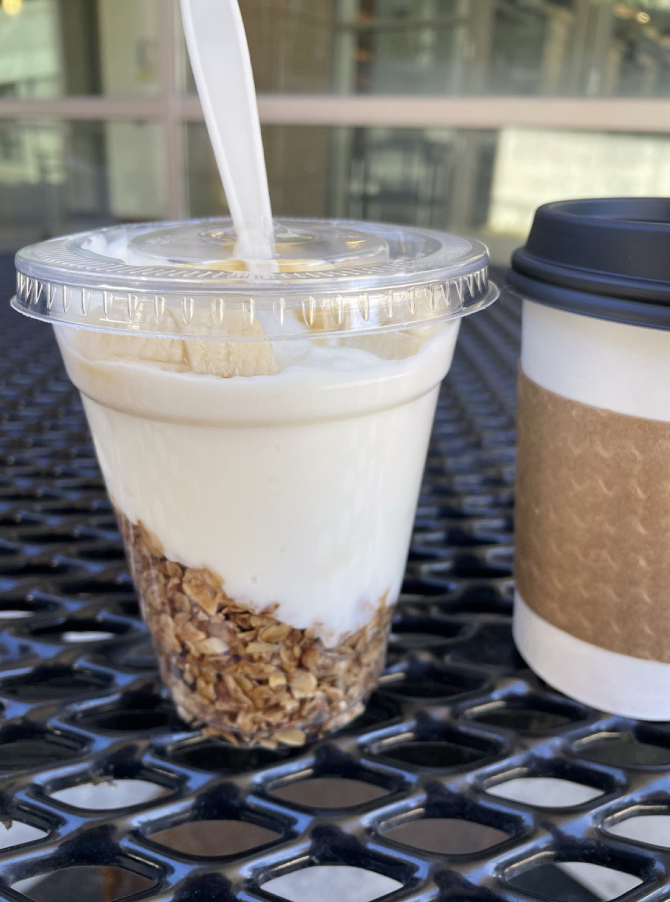
Don't be mistaken by this picture: Yali's holds a special place in my heart with its simple yet bold creation. Those who knew me in college know that I was a religous Yali's fan, I was there ~4-5 times a week.
The dish is simple: granola at the bottom, lots of plain yogurt, sliced bananna, and drizzled honey on top. The granola is very crunchy, and since you have to pick up the honey and bannanas and yogurt on the way down to reach the granola, you get the perfect flavor profile.
La Note, Berkeley, CA "CEREALES DU MATIN"
Ranking: A Tier
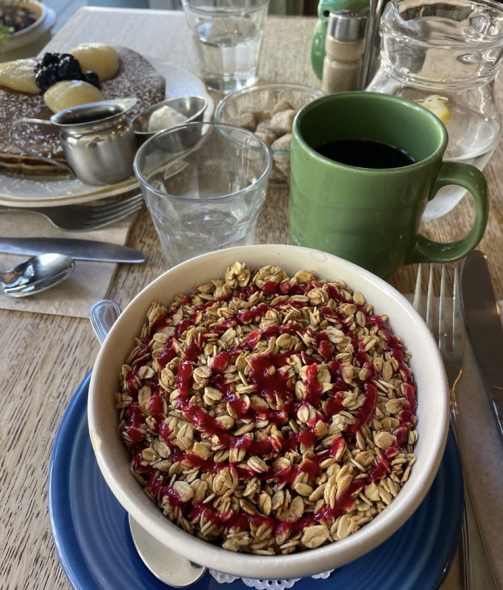
La Note is a well known cafe in Berkeley with higher prices. Despite the cost this granola is very worthy.
Described as "Almond raisin granola", the crunch is fantastic and you are given a heaping portion of it on top of your yogurt. This gets dinged a category because they don't give you fresh fruit, but there is still a lovely raspberry coulis added on top.
Toasty Lunchroom, Amsterdam "YOGHURT RED FRUIT"
Ranking: A Tier

Shoutout to my cousin for this rec!
This granola is so flavorful: it has a great mix of nuts, seeds, and light hint of cinnaomon. you can tell its house-made. On top of that, a great combination of fruits is added. Personally the best fruits are blueberry + strawberry + bannana.
Old Town Cafe, Bellingham WA, "OTC GRANOLA"
Ranking: A Tier

This granola is clearly homemade, with hints of pumpkin and honey. I also love the separation, I could customize my layering: yogurt on top or below? Genius!
This staff also asked me what fruit to add which is unique, they could have defaulted to kiwi or pineapple but also offered bananna + blueberries which I gladly took.
A "must see" for granola lovers of the PNW
Smoky Hollow Roasters, El Segundo, CA, "Greek Yogurt"
Ranking: A Tier
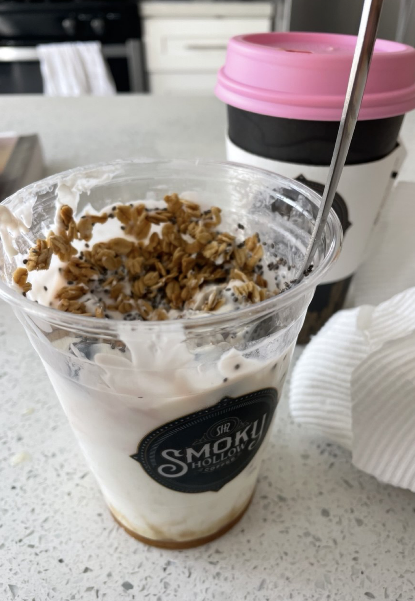
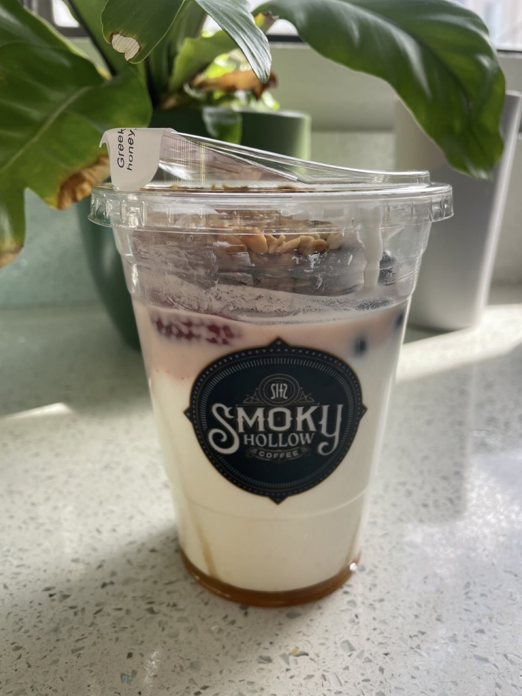
Finally, granola redemption in the south bay!
Smoky Hollow has fantastic coffee, so finding this yogurt granola was an excellent pairing. Contains a heaping serving of crunchy granola, fresh strawberries + blueberries, greek yogurt, and short spurts of honey at the bottom.
So far I've had this ~3 times and it never lets down, tastes very fresh and hits the spot.
Sam’s koffie - West, Amsterdam "Yogurt Bowl"
Ranking: B Tier
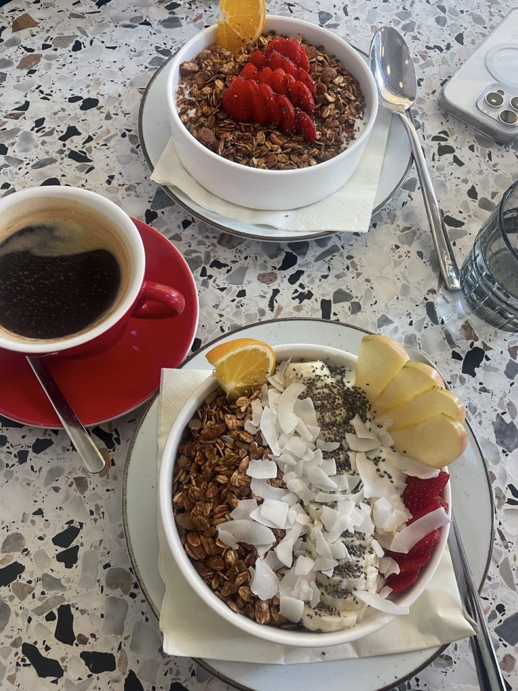
This was nearly perfect: crunchy helpful granola and yogurt portions.
However the fruit held it back: the orange slice is not good, nor are apples in here. props to the coconut but theres a bit too much here.
HOBO COFFEE, Nice, France, "Granola"
Ranking: C Tier
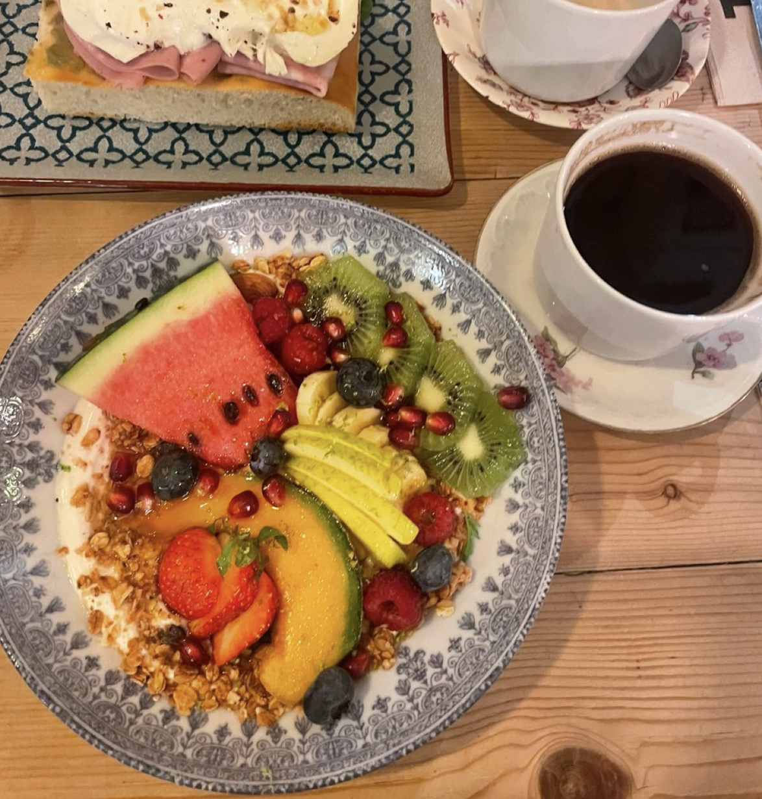
The display is impressive, but fruit choice is starting to get questionable. I don't need a whole ass slice of cantelope in there.
Regardless this is France so they actually know how to make food. There is a healthy size of granola and yogurt which satisfy me very much. Still, there's a lot to live up to here.
Blend Coffee and Vinyl shop, Nice, France, "FRESH YOGHURT"
Ranking: C Tier
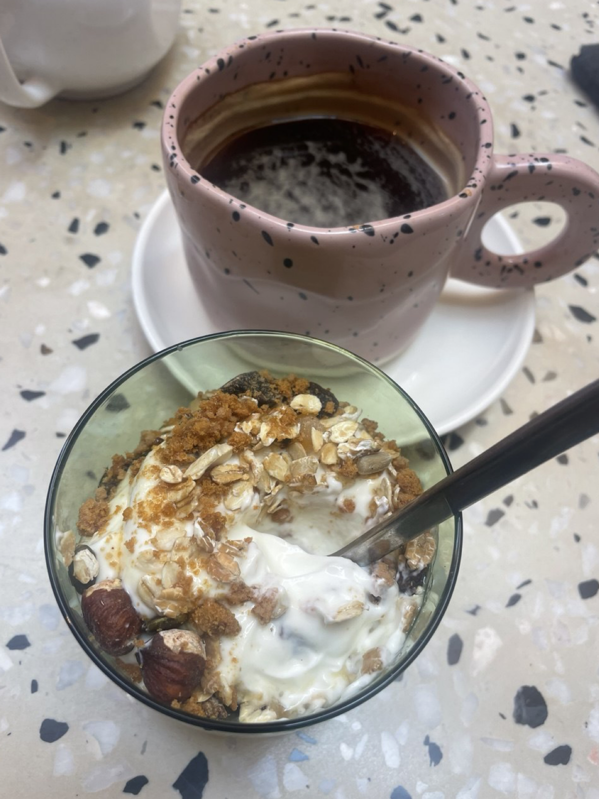
This only got knocked down far because there was (1) no fruits, and no raisins don't count (2) size of granola was sad
Still it was delicious, I love yogurt in France. Sad to knock it down to C, but once they get more granola and fruit in there I will reconsider.
SpaceX, Hawthorne, CA, "GREEK YOGURT"
Ranking: D Tier
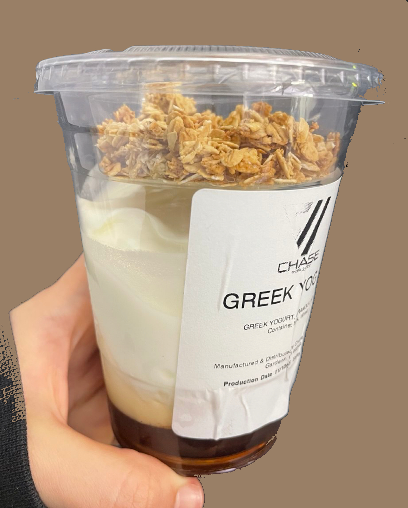
For 2 bucks its not bad, but this of course gets dinged due to lack of fruit (though you can just grab a bannana from main and throw it on top)
The granola is about a natures valley bar quality, nothing interesting mixed in but still a good snack. But WAY too much honey at the bottom!!
I was told that once upon a time there were more flavor variations e.g. vanilla with fruits added... maybe one day...
Good Stuff, El Segundo, CA "Homemade Granola & Fruit w/ Yogurt"
Ranking: D Tier
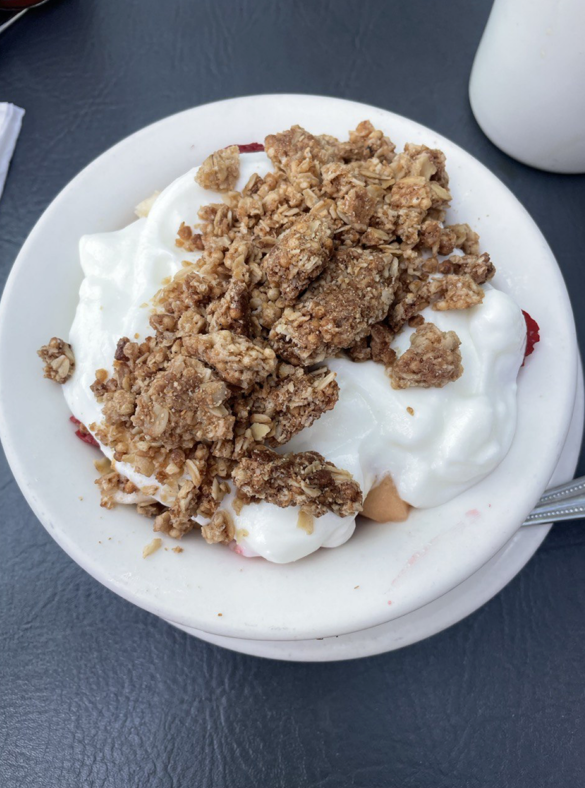
More like the lame stuff.
Ok the granola is literally just a crumbled up nature's valley bar lmao. luckily I love those, but still cmon guys.
Since this restaraunt is a chain im not shocked it lowkey sucked. Yogurt is on top of fruit to exaggerate volume, and they had this horrible fruit combo: honey dew (why??), cantelope (uhh), bananna (very good). idk why but south bay sucks at making this dish.
The Kettle, Manhattan Beach, CA "Sarah's Favorite"
Ranking: E Tier
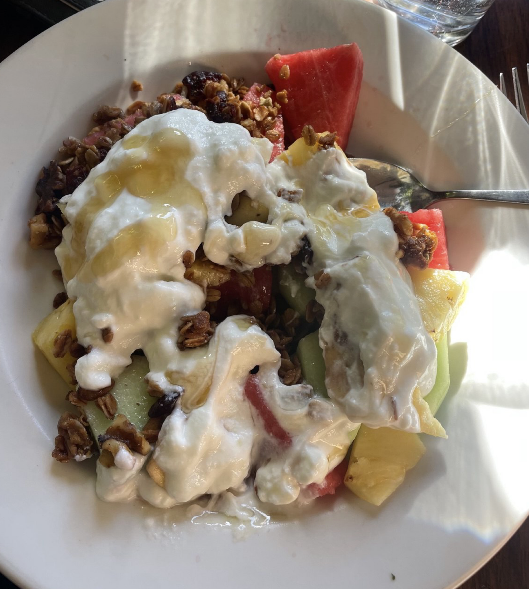
Whoever Sarah is don't let her cook.
While the granola is good, the amount is lacking and same story with the yogurt. The fruit is horrendous: watermelon, pineapple, honeydew. seriously wtf
Swami's Café Downtown, San Diego, CA "Homemade Granola & Fruit w/ Yogurt"
Ranking: F Tier
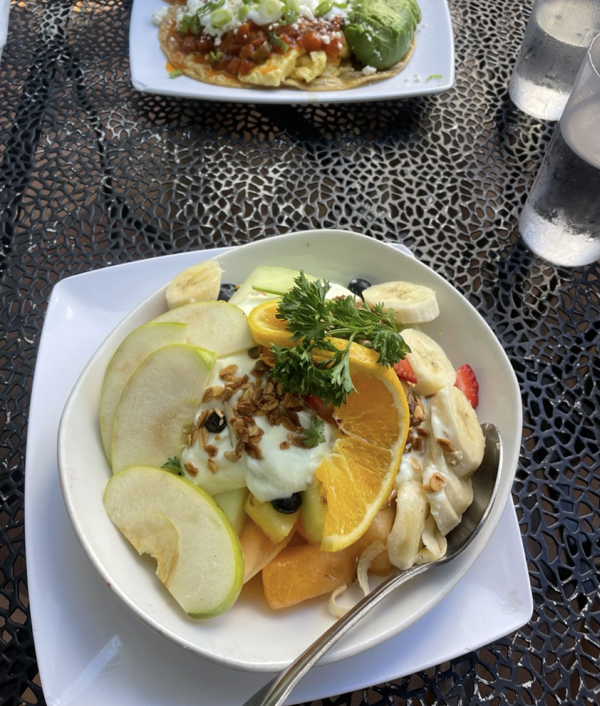
Is the granola in the room with us??
This bowl was dissapointing: it was loaded with melon/honey dew (why??), barely sprinkled with granola, and dumped with minimal yogurt. Honestly sucked. For 10 bucks this ain't it.